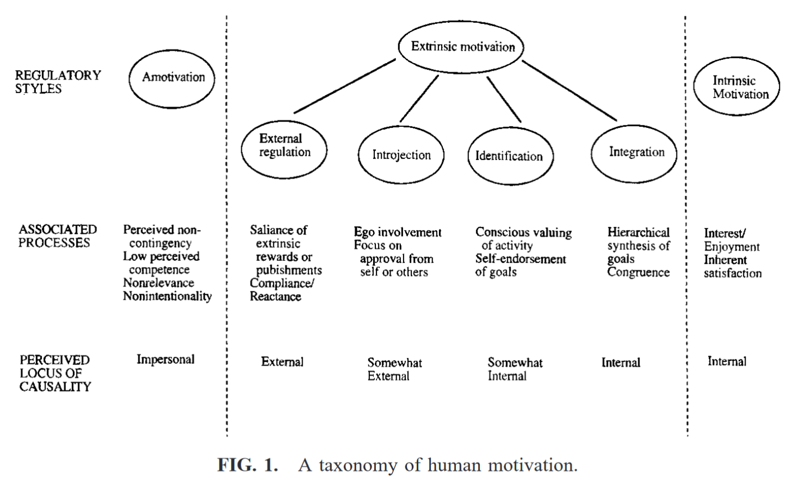

Ryan, Richard M., and Edward L. Deci. “Intrinsic and Extrinsic Motivations: Classic Definitions and New Directions.” Contemporary Educational Psychology 25, no. 1 (January 2000): 54–67. https://doi.org/10.1006/ceps.1999.1020.
Abstract:
Intrinsic and extrinsic types of motivation have been widely studied, and the distinction between them has shed important light on both developmental and educational practices. In this review we revisit the classic definitions of intrinsic and extrinsic motivation in light of contemporary research and theory. Intrinsic motivation remains an important construct, reflecting the natural human propensity to learn and assimilate. However, extrinsic motivation is argued to vary considerably in its relative autonomy and thus can either reflect external control or true self-regulation. The relations of both classes of motives to basic human needs for autonomy, competence and relatedness are discussed.
Main Arguments:
Extrinsic motivation: defined as a construct that pertains whenever an activity is done in order to attain some separable outcome. Self-determination Theory (SDT) proposes that extrinsic motivation can vary greatly in the degree of autonomy, ie. extrinsic motivation varies from controlling to autonomous/self-determined continuum)

External regulation
- Introjection: regulated by contingent self-esteem
- Identification: ego involvement
- Integration: through self-examination, and value assimilation
More autonomous extrinsic motivation is associated with greater engagement, better performance, and greater psychological well-being.
Internalization and integration:
Relatedness (facilitate identification?), competence facilitate more internalization, and autonomy facilitate integration of behavioral regulation (self-determined), however, feeling of competence alone will not enhance intrinsic motivation unless accompanied by a sense of autonomy. However, as extrinsic regulation become more internalized and self-determined, they do not transform into intrinsic motivation.
Questions:
"Because extrinsically motivated behaviors are not inherently interesting and thus must initially be externally prompted, the primary reason people are likely to be willing to do the behaviors is that they are valued by (their instrumental value) significant others to whom they feel (or would like to feel) connected, whether that be a family, a peer group, or a society. "
Can this instrumental value behind the extrinsic motivation be somewhat intrinsic?
Why “as extrinsic regulation become more internalized and self-determined, they do not transform into intrinsic motivation”?
"because behavior motivated by integrated regulation is done for its presumed instrumental value with respect to some outcome that is separate from the behavior, even though it is volitional and valued by the self."
Compare SDT with Reiss’s theory of 16 basic desires1, and simply Maslow’s Hierarchy of Needs
If extrinsic reward (money) undermines intrinsic reward, why Github Sponsors, open source Patreon, name your own price content download works?
References:
-
Reiss, Steven. “Multifaceted Nature of Intrinsic Motivation: The Theory of 16 Basic Desires.” Review of General Psychology 8, no. 3 (September 2004): 179–93. https://doi.org/10.1037/1089-2680.8.3.179. ↩